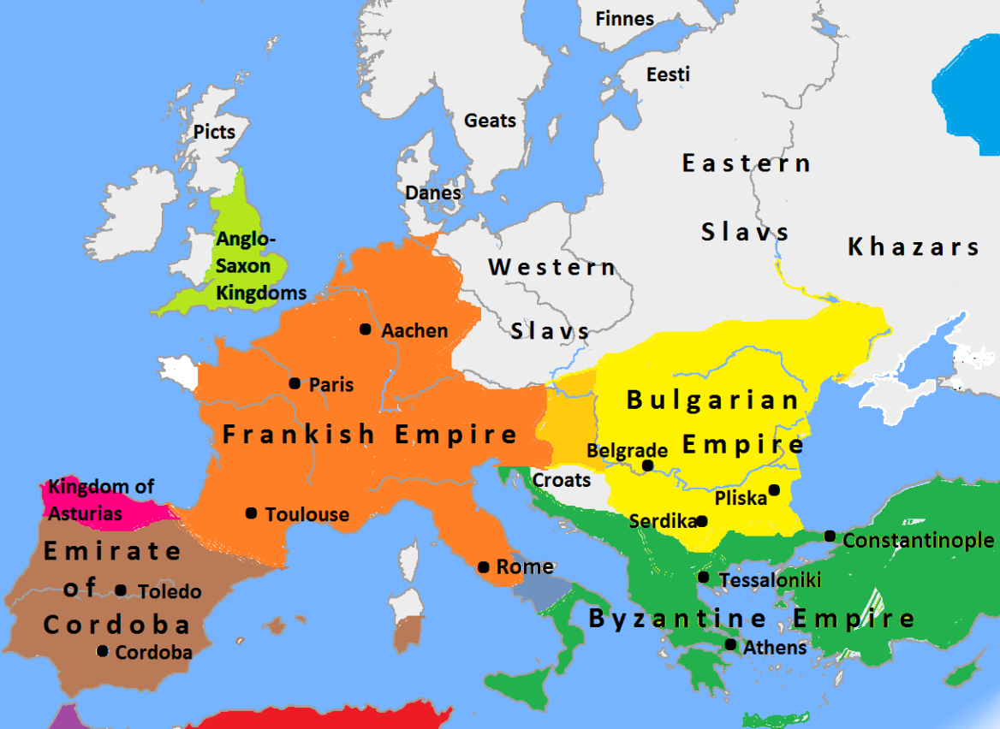

Christianization of Europe was a bad time all around. 0/10. Read this book for more.
A Needle Case in Point: Transformations in the Carpathian Basin During the Early Middle Ages (Late Avar Period, 8th-9th century) AD by GERGELY SZENTHE AND ERWIN GÁLL
| Country | King |
|---|---|
| Neustria | Louis |
| Italy | Pepin |